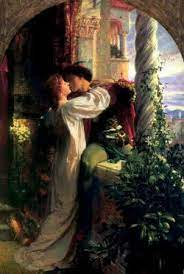

Romeu e Julieta são os protagonistas dessa história de amor. Eles se apaixonam perdidamente. No entanto, ambas famílias tem uma longa história de disputas. Romeu, que pretende casar com Rosalina, muda de ideia quando conhece a filha única dos Capuleto. Após o encontro, eles decidem se casar. Eles se conhecem num baile de máscaras que ocorreu na cidade de Verona (Itália) e logo se apaixonam. Entretanto, eles desconhecem suas origens, ou seja, nem imaginam que aquele amor pode causar muitos problemas. Com a esperança das famílias se entenderem, Frei Lourenço, amigo e confidente de Romeu, realiza secretamente o casamento dos jovens. Uma das peripécias da obra é o duelo que ocorre entre Teobaldo, primo de Julieta, Mercúcio, amigo de Romeu, e o próprio Romeu. Como resultado dessa briga, Teobaldo e Mercúcio morrem. Diante disso, o príncipe de Verona decide exilar Romeu da cidade. No entanto, ele aparece durante à noite para se encontrar com sua amada Julieta.
